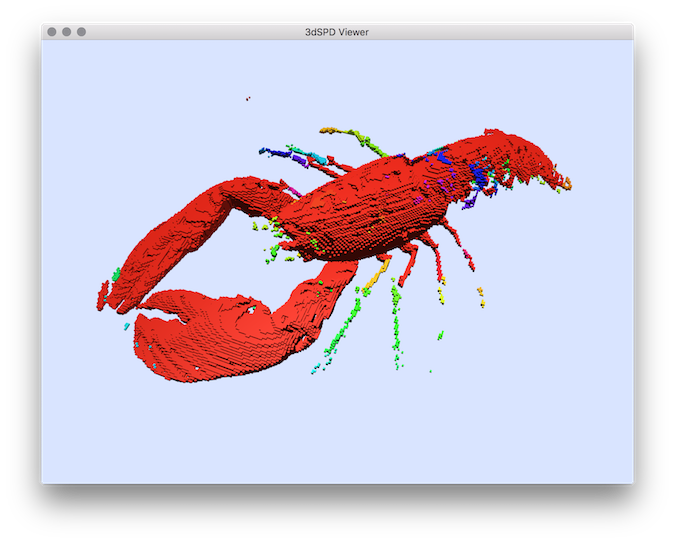

Segments volumetric file from a simple threshold which can be set automatically from the otsu estimation.
Usage: volSegment [input] [output]
Allowed options are :
-h [ --help ] display this message
-i [ --input ] arg volumetric input file (.vol, .pgm, .pgm3d,
.longvol)
-o [ --output ] arg volumetric output file (.vol, .pgm, .pgm3d,
.longvol)
--labelBackground option to define a label to regions associated
to object background.
-m [ --thresholdMin ] arg (=0) min threshold (if not given the max threshold
is computed with Otsu algorithm).
-M [ --thresholdMax ] arg max threshold (default 255)
Example:
You can test the segmentation in the lobster volume file:
$ volSegment -i ${
DGtal}/examples/samples/lobster.vol -o segmentation.vol -m 70 -M 255
You will obtain a volumetric file representing for each voxel a label associated to a connected component. You can display this segmentation results by extracting it in SDP format with the vol2sdp tool (with option -e to export also the image labels):
$ vol2sdp -i segmentation.vol -o segmentation.sdp -e -m 1 -M 255
and display them with 3DSDPViewer :
$ 3dSDPViewer -i segmentation.sdp --importColorLabels
You should obtain such a result:

Segmentation result displayed with colors representing the segmentation labels.
- See also
- volSegment.cpp